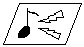
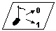
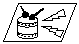
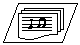

2.3.5 Audio Reproduction Process
Reproducing Audio Step by Step

- Create the audio heap.
- Set the hardware output frequency.
- Create a synthesizer.
- Create a message queue for receiving the signal that adapts the timing of the audio process.
- Create players (sound player, sequence player, and so on) to be added to the synthesizer.
- Initialize the resources allocated to each player.
- Create the audio command list.
- In RSP, execute the audio task based on the audio command list.
- Set the audio DAC.
Setting Up the Synthesizer Step by Step

Before reproducing the audio, you first need to set the synthesizer by following this procedure:
- Initialize the audio heap.
For each audio library function, N64 allocates required memory dynamically from the memory area called the audio heap. Therefore, to use the audio library, you must first initialize the audio heap area by using the alHeapInit function.
- Set the hardware reproduction rate
To set the hardware reproduction rate, use the osAiSetFrequency function.
- Set up the synthesizer driver configuration structure
Before creating the synthesizer, set the parameters such as maxUpdates in the synthesizer driver configuration structure.
- Create the synthesizer
Use the alInit function to create the synthesizer.
- Accommodate the DMA callback routine
As occasion demands, to transfer the waveform data in ROM to RDRAM, you must accommodate the DMA callback routine called from the synthesizer driver. To do this, you need to set the pointer to the DMA initialization routine in the synthesizer driver's configuration structure. This DMA initialization routine is called once for each physical voice; it initializes the DMA buffer with the first call and is set to return the pointer (ALDMAproc) to the function called when actually requiring the waveform data. ALDMAproc receives the address, length, and state pointer of the required data and returns the pointer to the buffer storing its data as the return value.
Nintendo uses this method in order to give you, the programmer, more freedom. This way, you can customize the algorithm by choosing to put either the cache process or the resident process outside.
Reproducing Sound Effects Step by Step

Sound effects are reproduced by using a sound player which is a client of the synthesizer. To reproduce a sound effect, use this procedure:
- Accept the audio bank from ROM
To reproduce the sound, you need to first use DMA to transfer the control file of the wave table to RDRAM. The following is a typical procedure you can use to complete the DMA transfer of the audio bank. The first three steps are required only with the first setting.
- Create the PI Manager by using the osCreatePiManager function.
(In the actual game program, you create the PI Manager in the main
program, so there is no need to recreate it here; the audio side just uses it.)
- Create the message queue to verify the end of the DMA transfer by
using the osCreateMesgQueue function.
- Reserve the heap area for the audio bank by using the alHeapAlloc function.
- Before the DMA transfer, provide for the write back of the CPU cache by using the osWritebackDCache or osWritebackDCacheAll function.
- Initiate the DMA transfer by using the osPiStartDma function.
- Verify the end of the DMA transfer by using the osRecvMesg function.
- Activate the sound player
Use the alSndpNew function to activate the sound player. This also automatically registers the client player in the synthesizer driver.
- Initialize the audio bank
Use the alBnkfNew function to initialize the audio bank used to reproduce the sound effect.
Here "initialize" actually means "convert from the offset to the pointer" and "convert from the offset to the address."
- Allocate resources to the sound
Allocate the sound to the player by using the alSndpAllocate function.
- Choose the sound
Before setting the pan, volume, and so on, you need to choose the sound by using the alSndpSetSound function.
- Reproduce the sound
Use the alSndpPlay function to reproduce the sound.
- Stop the sound
Use the alSndpStop function to stop the sound.
- Delete the sound player
If you no longer need the sound player, delete the client from the synthesizer driver by using the alSndpDelete function.
Reproducing Sequences Step by Step
To play MIDI sequences, you need to use a sequence player which is a client of the synthesizer. Use the audio library, and follow these steps:
- Accept the audio bank from ROM
This step is identical to step 1 for reproducing sound effects. To reproduce a sequence, you need to first use DMA to transfer the control file of the wave table to RDRAM. The following is a typical method you can use to complete the DMA transfer of the audio bank. The first three steps are required only with the first setting.
- Create the PI Manager by using the osCreatePiManager function.
(In the actual game program, you create the PI Manager in the main
program, so you won't need to recreate it here; the audio side just uses it.)
- Create the message queue to verify the end of the DMA transfer by
using the osCreateMesgQueue function.
- Reserve the heap area for the audio bank by using the alHeapAlloc function.
- Before the DMA transfer, provide for the write back of the CPU cache by using the osWritebackDCache or osWritebackDCacheAll function.
- Initiate the DMA transfer by using the osPiStartDma function.
- Verify the end of the DMA transfer by using the osRecvMesg function.
Now the PI Manager and message queue for DMA transfer are created, so they can be used by step 2 without having to be recreated.
- Accept the MIDI sequence from ROM
Before reproducing a MIDI sequence, you need to use DMA to transfer the sequence from ROM to RDRAM, which you can do by following this typical procedure:
- Read the first four bytes of the sbk file header. The first two bytes hold the version and the next two bytes hold the number of the sequence. To do this step, you need to first reserve the header area by using the alHeapAlloc function. Then use DMA to transfer the first four bytes.
- Use DMA to transfer the entire header including the ALSeqData structure which holds the sequence number.
- Initialize the sequence bank file by using the alSeqFileNew function.
- Use DMA to transfer the required MIDI sequence information stored in ALSeqData structure.
- Activate a sequence player
Use the alSeqpNew function (for a Type 0 MIDI file) or the alCSPNew function (for a compact MIDI file) to activate the appropriate sequence player.
- Initialize the sequence structure
The sequence structure stores the sequence data information needed to reproduce the MIDI sequence. Use the alSeqNew function (for a Type 0 MIDI file) or the alCSeqNew function (for a compact MIDI file) to initialize the structure.
- Set up the sequence in the player
To set up the sequence in the player, use the alSeqpSetSeq function (for a Type 0 MIDI file) or the alCSPSetSeq function (for a compact MIDI file).
- Initialize the audio bank
This step is identical to step 3 of the sound effect reproduction procedure. Use the alBnkfNew function to initialize the audio bank used to reproduce the sound effect.
Here "initialize" actually means "convert from the offset to the pointer" and "convert from the offset to the address."
- Set up the audio bank
Specify the instrument bank to be used by the sequence player by using the alSeqpSetBank function (for a Type 0 MIDI file) or the alCSPSetBank function (for a compact MIDI file).
- Play the sequence
To initiate the sequence reproduction, use the alSeqpPlay function (for a Type 0 MIDI file) or the alCSPPlay function (for a compact MIDI file).
- Stop playing the sequence
To stop playing sequence, uses the alSeqpStop function (for a Type 0 MIDI file) or the alCSPStop function (for a compact MIDI file).
- Delete the sequence player
When a sequence player becomes unnecessary, delete it as a client of the synthesizer driver by using the alSeqpDelete function (for a Type 0 MIDI file) or the alCSPDelete function (for a compact MIDI file).
Executing Audio Tasks Step by Step

- Ensure that the audio buffers are ready
An audio process generally reserves three audio buffer areas in RDRAM. It also reserves two buffers for the audio command list so that one buffer is always ready to be played. This double buffering helps to prevent sound from pausing by never having to wait for an audio process.
- Synchronize the retrace and RSP events
To execute an audio task, N64 game programmers usually prepare two message queues -- one to post the VI retrace, and the other to post the completion of the RSP task. Set up the former by using the osViSetEvent function, and set up the latter by using the osSetEventMesg function. Store the event type in OS_EVENT_SP. The VI retrace event is essential to ensure that each audio process is executed for each frame.
- Regulate the sample to ensure compliance with frame size
To avoid clicking sounds in the music, you need to regulate the processing sample number to ensure that it is in compliance with the situation. To do this, use IO_READ (AL_LEN_REG) or the osAiGetLength function.
This detects the sample number remaining in the audio buffer without using it, and it regulates the sample so that the newly processing sample number is in compliance with the available space and can have a little more room. Because the sample number having room varies depending on the program or sound, you need to regulate it by continually computing the actual amount remaining.
- Create the audio command list
To create the audio command list, use the alAudioFrame function.
- Execute the audio task
To have the RSP execute the audio task based on the audio command list and create the waveform data in the audio buffer, use the osSpTaskStart function.
- Set up the audio DAC
Use DMA to transfer the audio to the audio DAC by using the osAiSetNextBuffer function.
Nintendo® Confidential
Copyright © 1999
Nintendo of America Inc. All Rights Reserved
Nintendo and N64 are registered trademarks of Nintendo
Last Updated March, 1999